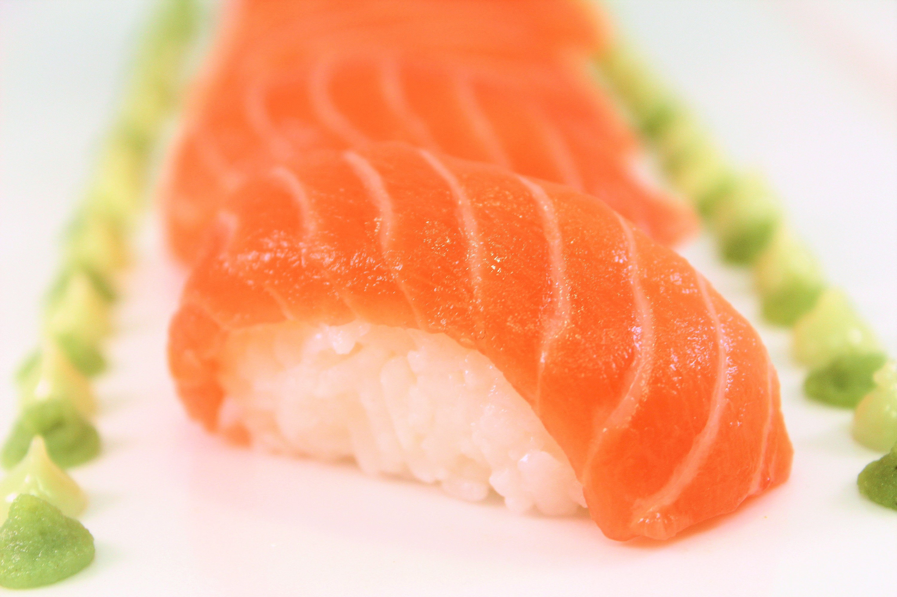

Matching app for sushi chefs lovers
navigation menu
search for sushi
Matching Chef
Zoek een sushi chef-kok maatje
Shows profiles from chefs
Nieuwe leden
Shows profiles from chefs

Zalm sushi
Jan, 25 jaar, (M)
Skills: amateur